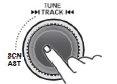

Saving radio stations automatically Press the AM or FM button repeatedly to select the band. The previously chosen broadcasting station will be received.  Press and hold the AST button to automatically save receivable frequencies to Preset button. "AST" is shown , and then stores stations in the order of their frequencies on the Preset buttons. Up to 6 stations can be stored in each of the AMA and FMA band Parent topic: Operator’s Station and Monitoring Systems